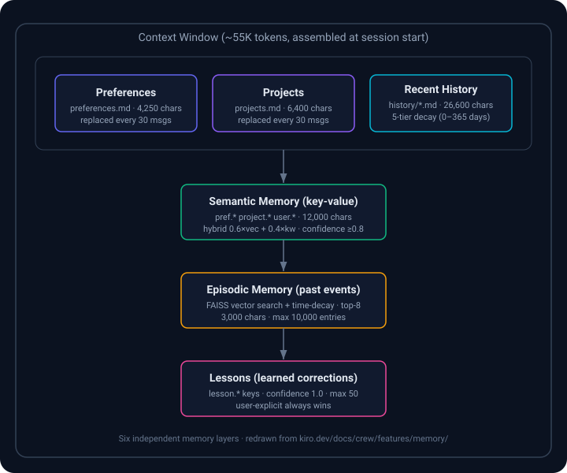

Kiro Crew Training
Personal AI Agent Platform: Persistent • Self-Learning • Self-Evolving • Autonomous
What is Kiro Crew? ✓ Verified
Open-source personal AI agent that runs locally or remotely
Persistent
Sessions, memory, and schedules persist beyond one chat session
- 6-layer memory system
- Survives gateway restarts
- 365-day history retention
Self-Learning
Your corrections become durable lessons
- User-taught rules (confidence 1.0)
- Detected patterns
- Project context carries across sessions
Self-Evolving
Repeated patterns can become reusable skills
- Memory, lessons, skills remain visible
- Editable by you
- Shareable across team
Autonomous
24/7 operation without human presence
- Scheduled jobs (cron)
- Reactive monitoring (heartbeats)
- External triggers (webhooks)
📚 Source
All information verified from: kiro.dev/docs/crew/
The Kiro Ecosystem ✓ Verified
"One agent, every surface"
💡 Key Concept
Kiro Crew is NOT a separate product. It's one of multiple surfaces for the same unified Kiro agent harness.
- Single subscription covers all surfaces
- Shared
.kiro/configuration - Unified credit system
🖥️ IDE
Desktop editor integration (VS Code, IntelliJ, etc.)
Interactive⌨️ CLI
Terminal-native interface
Real-time🌐 Web
Browser-based access (preview)
Anywhere📱 Mobile
iOS/Android apps (preview)
On-the-go🚀 Crew
Persistent agent with automation
24/7 Operation Memory Scheduling📚 Source
kiro.dev/docs/ - "Your .kiro/ configuration is shared across all of them"
kiro.dev/pricing/ - "Kiro subscriptions can be used with Kiro IDE, Kiro CLI, Kiro on the web, Kiro Crew"
Architecture ✓ Verified
🗄️ Local Data Storage
Location: ~/.kiro/crew/
config.json- User configurationworkspace/memory/- 6-layer memoryconversations/- Session logscrons.json- Scheduled jobsknowledge/- Ingested documents
🔐 Authentication
First launch: device-code sign-in (per installation docs)
- Account can be created with AWS Builder ID or social login (per pricing page)
✅ No AWS CLI needed
Gateway authenticates with kiro-cli directly
⚠️ CRITICAL: NO AWS Bedrock
Common misconception: Kiro Crew does NOT use AWS Bedrock or require AWS configuration.
✅ Correct: Uses Kiro's own model services via kiro-cli
📚 Source
Why Kiro Crew? (When You Already Have IDE/CLI) ✓ Verified
Understanding what makes Crew unique
| Need | IDE / CLI | Crew |
|---|---|---|
| Context | Session-based Ends when session ends |
Persistent 6-layer memory, 365-day history |
| Availability | Requires human at terminal/editor | 24/7 autonomous Cron, heartbeats, webhooks |
| Learning | Per-session only | Durable lessons Corrections persist forever |
| Parallelization | Single-threaded interaction | 3-32 concurrent subagents Auto-sized, parallel research |
| Access | Local terminal/editor | Multi-channel Slack, Discord, Teams, Dashboard |
| Tasks | Interactive Q&A | Autonomous task runner Decompose → execute → test → retry |
🎯 When to Use What
Use IDE/CLI for:
- Real-time coding and debugging
- Interactive prototyping
- Immediate code generation
- Pair programming sessions
Use Crew for:
- 24/7 monitoring (PR status, CI pipelines, incidents)
- Scheduled tasks (nightly audits, reports)
- Team access via Slack/Discord
- Complex multi-step autonomous tasks
- Persistent memory across days/weeks
- Parallel investigation (3-32 subagents)
📚 Source
Comparison based on documented capabilities:
Core Features Deep Dive
The Six Memory Layers

New sessions inherit preferences, project context, and learned corrections from every prior session — without replaying old conversations token by token. Six independent layers, each with a specific purpose. (Diagram redrawn from the official docs.)
6-Layer Memory System ✓ Verified
All capacity limits verified from official documentation
• 0-13 days: Full entries
• 14-60 days: First entry per day + count
• 61-180 days: Date + count only
• 181-364 days: Not loaded
• 365+ days: Deleted
# Example: Teaching a lesson
You: "Always use pytest over unittest"
# Crew saves this as a lesson (confidence 1.0)
# In future sessions, it will prefer pytest
How Memories Get Built
Three consolidation triggers:
learn_addMCP tool — user says "remember X" or agent is corrected → immediate lesson save- Every 30 messages → Preferences path: wholesale-replaces
preferences.md+projects.md, extracts semantic entries (max 20) - 3-hour idle → History path: appends to
history/{date}.md, extracts episodic entries (max 10) + implicit lessons
The prefs path does not advance the persisted last_consolidated marker — history consolidation always covers all messages, even if prefs consolidation fired earlier.
Explicit vs implicit lessons: explicit = user says "remember to always…" (saved immediately via learn_add); implicit = correction detected without "remember" (extracted during history consolidation). Both go through write_lesson() with substring + topic-overlap dedup.
Conflict Resolution — 6-Level Priority Order
- Lessons (user-explicit, confidence 1.0) — injected as
[Learned corrections]"ALWAYS follow these" - Semantic memory (user-explicit writes)
- Semantic memory (LLM writes, confidence ≥ 0.8)
- Preferences / Projects (consolidation-generated)
- Episodic memory (relevance-scored fragments)
- History (time-decayed summaries)
Context Assembly
At session start:
- Critical rules (~500 chars) · Date/time · Agent system prompt
- Thread history (45,000 chars, LLM-compressed)
- Preferences (4,250) · Projects (6,400) · Recent history (26,600)
- Skills (always-on + summaries) · Lessons (37,250) · Semantic (12,000)
Per message (follow-up turns):
- Episodic memory (queried by message text, top-8 up to 3,000 chars)
- Channel history (Slack observe mode)
- Triggered skills (on-demand, matching message keywords)
- Hook context (config-driven rules)
Channel-Aware Memory
Same memory store across every channel, but recording behavior varies:
| Channel | Activation | History Buffer | Consolidation |
|---|---|---|---|
| DM | always | Session-based (ACP) | ✅ Yes |
| Group (mention) | @mention | 50 msg, 5-min TTL, in-memory | ✅ When @mentioned |
| Group (observe) | observe | 200 msg, 1-week TTL, disk | ✅ When @mentioned |
| Group (off) | off | None | ❌ No |
| Dashboard tab | N/A | Session-based (ACP) | ✅ Yes |
Observe-mode security: only messages from authorized users (owner + allowlist) are recorded; non-authorized messages are silently dropped.
Teaching Crew & Managing Memory
# CLI lesson management
kirocrew learn add "always use TypeScript over JavaScript"
kirocrew learn add "prefer pytest over unittest" --category tool
kirocrew learn list
kirocrew learn remove "prefer pytest"
The learn_add MCP tool is the same interface exposed to the LLM — when the agent recognizes a correction, it calls the tool itself.
Dashboard surfaces: Memory Graph Explorer (visualize semantic relationships via vis.js) · Skills/Lessons CRUD · Knowledge Library (curated doc store, separate from episodic/semantic).
Backup: Memory is included in kirocrew snapshot (episodic + semantic DBs + workspace/memory/ markdown). See Snapshot & Restore section.
📚 Source
Subagents (Parallel Background Agents) ✓ Verified
Spawn multiple agents for parallel research and investigation
| Property | Value |
|---|---|
| Concurrency | 3-32 agents (auto-sized based on machine resources) NOT 11 as commonly misunderstood |
| Timeout | 30 minutes hard limit |
| Stall Detection | ~2 minutes no activity = warning |
| Context | Isolated sessions with memory injection |
| Usage | Just ask in chat - agent decides when to spawn |
# Example: Parallel research
You: "Research these 3 technologies: Redis, PostgreSQL, MongoDB"
# Crew spawns 3 subagents in parallel
# Each investigates one technology
# Results aggregated and presented together
⚠️ Common Error Corrected
WRONG: "Crew supports up to 11 concurrent subagents"
CORRECT: "Crew supports 3-32 concurrent subagents, auto-sized based on machine resources"
📚 Source
kiro.dev/docs/crew/features/subagents/ - "usually 3–32"
Scheduling (3 Modes) ✓ Verified
Three different ways to run tasks without human presence
Mode 1: Cron Jobs
- Standard cron expressions
- Or
--every Nseconds - Per-job timeout (default 1800s)
- Fresh or persistent sessions
- Jitter by default (disable with
--strict-schedule)
Mode 2: Heartbeats
- Reactive monitoring (checks every 60s)
- Only surfaces when something changes
- Lives in
HEARTBEAT.md - Lifecycle: runs until condition met
Mode 3: Webhooks
- External triggers via HTTP POST
- Endpoint:
/api/hooks/agent - Max 6 concurrent webhook sessions
- Default 10-minute timeout
- Bearer token authentication
# Example 1: Cron job
kirocrew cron add \
--name "Nightly Security Scan" \
--cron "0 2 * * *" \
--message "Scan all repos for secrets and vulnerabilities"
# Example 2: Webhook
curl -X POST http://localhost:5476/api/hooks/agent \
-H "Authorization: Bearer $TOKEN" \
-d '{"message": "Build #1234 failed. Investigate."}'
Use Cases by Mode
| Mode | Best for | Enterprise example (below) |
|---|---|---|
| Cron | Time-driven, predictable work: nightly audits, daily digests, periodic status checks, scheduled report generation | Nightly Security Audit (cron @ 2am → spawns subagents per repo) |
| Heartbeat | Condition-driven watching: only surfaces when something changes — stale PRs, drifting config, threshold breaches, deployment state | 24/7 PR Monitoring (watch open PRs, ping reviewers when stale >4h) |
| Webhook | Event-driven, externally triggered: CI failures, PagerDuty alerts, GitLab/GitHub events, third-party callbacks | Incident Response (PagerDuty webhook → triage + RCA) |
Rule of thumb: Cron = "run on this clock", Heartbeat = "wake me only when X changes", Webhook = "run when an outside system calls me". The Enterprise Use Cases section below shows each of these end-to-end (the Multi-Repo Migration case pairs Task Runner with subagents rather than a schedule).
🔴 Live Demo — running in this Kiro Crew right now
A real Cron job is scheduled in the presenter's Kiro Crew for this training:
- Job:
Kiro Crew Training - Live Demo(id66d68a11) - Schedule:
0 1 * * *— daily 01:00 UTC (09:00 Asia/Taipei) - Action: checks that this training site returns HTTP 200 and reports one line (date · status · code)
# How it was created (CLI carries admin authority)
kirocrew cron add "Kiro Crew Training - Live Demo" \
"Check the training site returns HTTP 200; reply one line." \
--cron "0 1 * * *"
# Manage it live
kirocrew cron list
kirocrew cron trigger 66d68a11 # fire immediately (demo)
kirocrew cron pause 66d68a11
kirocrew cron remove 66d68a11
During the lecture, run kirocrew cron trigger 66d68a11 and show the result arriving in the dashboard/Slack — that is the scheduling feature working end-to-end.
📚 Source
Task Runner ✓ Verified
Autonomous task execution from specifications
1. Decompose
Break spec into concrete steps
2. Execute
Run each step with checkpoints
3. Test
Verify step completion
4. Retry
Handle failures automatically
5. Resume
Restartable from failure point
Use Cases
Task Runner is for multi-step, unattended work that must survive failures and resume — it decomposes a spec, executes with per-step git commits, runs tests, does an independent self-review of the actual git diff, and retries or re-plans. Runs up to 3 tasks concurrently; 10+ hour unattended runs are the design target.
| Use case | Why Task Runner (not chat / cron) |
|---|---|
| Multi-repo migration — bump a dependency / apply a codemod across 50 repos | Per-repo checkpoint + resume; a failure at repo 37 doesn't restart the other 36. See Enterprise: Multi-Repo Migration |
| Large feature / refactor from a spec | Decompose → execute → test → self-review the diff → commit; auto-retry (MAX_RETRIES 3) and re-plan on failure |
| Backlog burn-down — clear a list of small, well-specified fixes overnight | Unattended 10+ hr runs; watchdog warns at 60 min, resets at 2 hr; crash-recovers running→paused on restart |
| Test-and-fix loops — implement until the test suite passes | Runs build/test after each step, reverts and retries on red (skip with --no-test) |
When NOT to use it: interactive exploration or a one-shot answer → use Chat; time/event-driven recurring work → use Scheduling; parallel independent research → use Subagents. Task Runner is specifically for sequential, checkpointed, self-verifying execution of a spec.
🔴 Live Demo — a real task spec you can run
A runnable spec ships with this training at demo-task-spec.md — a safe, read-only quality check of this very training site (count sections, verify each has a title + content + source, check nav links and the SVG).
# Run the demo task from the CLI
kirocrew run demo-task-spec.md --name "Training QA" --no-test
# Or: dashboard Projects panel → paste/point at the spec → Refine → Run
# Useful flags
kirocrew run demo-task-spec.md --fresh # ignore checkpoint
kirocrew run demo-task-spec.md --timeout 600 # cap runtime
During the lecture: open the Projects panel, start the task, and watch the Decompose → Execute → Test → Self-review → Commit loop run with live checkpoints. The spec is read-only (it inspects index.html), so it is safe to run in front of an audience.
Artifacts ✓ Verified
Persistent outputs with version history
| Kind | Description |
|---|---|
| widget | Interactive HTML widgets |
| html | Static HTML pages |
| markdown | Markdown documents |
| svg | Vector graphics |
| json | Structured data |
| text | Plain text |
✨ Optional: Deploy to AWS
Deploy webapp artifacts to public URLs on your AWS account
Requires AWS account configuration
Knowledge Library ✓ Verified
Curated document store (separate from automatic memory)
- Sources: Local files, folders, URLs
- Ingestion: Chunking, entity extraction, embeddings
- Search: Via
local_knowledge_searchMCP tool - Access: Built-in dashboard surface (not App Store app)
📏 Size limits
The official Knowledge docs do not publish a hard size limit. Check the current documentation or your dashboard for any account-specific limits.
Advanced & Enterprise Topics ✓ Verified from Official Docs (2026-08-31)
These sections cover the full breadth of kiro.dev/docs/crew/ beyond the core features above — the material enterprise teams need for secure, always-on deployment.
🔒 Security (8-Layer Defense-in-Depth)
Every tool call passes through independent layers enforced at the runtime boundary — not by prompt instructions. Order:
- Owner lock — unauthorized channel users rejected before a session
- Denied commands — 137 patterns block destructive ops (before approval)
- Governance ceiling — Policy ∩ Profile (tightest-wins), cannot be loosened
- Sensitive path blocking — credential dirs/files inaccessible
- Tool approval — interactive / trust / Autopilot (only after deny checks)
- Input validation — MCP schemas, type/length checks, unicode normalization
- OS sandbox — Linux namespaces or macOS Seatbelt
- Output redaction — credential patterns scrubbed from every response
SEL audit records every decision (cross-cutting, not a gate).
Sandbox modes (agent.sandbox): auto (default, hides .gnupg/.gcloud/.azure/.docker; allows .aws/.ssh/.kube) · strict (hides all incl. .aws/.ssh/.kube) · off. Windows has no OS-level sandbox layer; all other protections still apply.
Tool approval: Interactive (default) · Trust command · Trust tool · Autopilot. Denied commands & sensitive-path blocks are never bypassed — even in Autopilot.
Denied commands (137 built-in) e.g. rm -rf /, push to protected branches, cat ~/.aws/credentials, curl 169.254.169.254, DROP TABLE. Enforced at Crew's tool gate — editing a kiro-cli agent config cannot weaken them.
# Governance & audit
kirocrew policy show | validate | explain
kirocrew security events | audit | verify📚 Source
🖥️ Running 24/7
Four deployment patterns so the Slack bot, cron jobs, and task runner keep working while you're away.
Local service (systemd on Linux / launchd on macOS) — survives SSH disconnect, auto-restarts, auto-starts on boot; runs as your user (not root); sudo only once to write the unit file.
kirocrew service install | status | uninstall
kirocrew logs -f
kirocrew restartDocker (multi-arch GHCR image) — first run needs kiro-cli login + kirocrew token; tags stable/insider/nightly/pinned; SLSA provenance; sandbox probes fail-closed.
docker run -d --name kirocrew \
-p 127.0.0.1:5476:5476 \
-v kirocrew-home:/home/kirocrew \
ghcr.io/kirodotdev/kirocrew:stableRemote host — modern Linux, ~10 GB RAM (16 GB comfortable), x86_64/arm64, Node 20+ for slack-mcp. Access the loopback dashboard over SSH:
ssh -L 5476:localhost:5476 user@your-host
# or ~/.ssh/config: LocalForward 5476 localhost:5476Syncing state: memory dirs + SQLite DBs including WAL files (memory.db-wal, -shm), config, tasks, skills, crons. Do NOT sync host secrets (.env, .local_secret, sel_hmac.key). Use scripts/sync-to-remote.sh.
Mobile access: expose port 5476 via Cloudflare Tunnel / ngrok / Tailscale, set dashboard.url, use /kirocrew dashboard for presigned links. Token 1h default (up to 20h); link click window 5 min.
📚 Source
🔌 Interfaces (One Gateway, Many Surfaces)
Work from Mac app, web dashboard, or CLI, then continue through Slack, Discord, Telegram, Teams, Webex, WeCom, or WeChat. A dashboard tab and a Slack thread are independent sessions but share memory, skills, lessons, and crons. Channels connect outbound — no need to expose the dashboard port.
- Web dashboard — React SPA at
localhost:5476; the primary interface (artifact library, memory graph, MCP panel, App Store, task runner UI live only here) - Cross-surface sync — 💬 links a dashboard tab to a Slack thread (bidirectional);
sessionscommand + ▶️ Resume on any surface - Ports — 5476 loopback-only by default; reverse proxy + TLS or SSH tunnel for remote
kirocrew gateway
kirocrew token --ttl 2h # remote login link8 channel setup guides + CLI reference under /docs/crew/interfaces/.
📚 Source
💬 Chat
Send text, a file (@filename), or a voice memo; the agent streams text with live tool calls. Guide via approve/reject, edit & resend, fork, or Autopilot. Each tab is an independent session sharing long-term memory.
- Attach file —
@fuzzy picker · Image — drag/paste (vision) - Voice — mic for streaming STT; speaker for local Piper TTS (fully offline)
- Prompt optimizer — Cmd+Shift+Enter / ✨ rewrites a vague prompt
- Autopilot toggle · Incognito (nothing persists) · Switch models · Reasoning effort per message
Leaf topics: Sessions · Message controls (edit/rewind/regenerate/fork/interrupt) · Prompt optimizer · Voice · Rich output & widgets.
📚 Source
🧩 Agent Capabilities (Customization Hub)
Customize how Crew's agent behaves from the dashboard sidebar:
- Agents — configs: model, prompt, tools, MCP servers
- Agent Templates — prebuilt configs to start from
- Integrations (MCP) — add external tools/services via MCP servers
- Skills — on-demand knowledge files teaching workflows/domain expertise
- Steering — workspace-level rules every session inherits automatically
- Hooks — automate reactions to events (run scripts / inject context)
- Prompts — manage/customize the system prompts shaping behavior
📚 Source
⚙️ Configuration
Most config is in the dashboard Settings panel; changes take effect immediately. Sections: Overview, Imports, Chat, Display, Voice, Notifications, Shortcuts, Skills, Channels, Browser, Computer Use, Instances, Security, Developer, About.
kirocrew config get [key]
kirocrew config set dashboard.bot_name "X" # auto-restarts pool
kirocrew config edit- Config file:
~/.kiro/crew/config.json(standard JSON, missing keys → defaults) - Themes: 14-theme system (dark/light variants, custom + import) via Settings → Display
- Channel credentials:
~/.kiro/crew/.env(mode 600), not in config.json - Env vars:
KIROCREW_HOME(~/.kiro/crew),KIROCREW_PORT(5476) — set before starting gateway
🖧 Multi-instance
Drive several remote Crew hosts (dev boxes, EC2, home servers) from one hub gateway via SSH tunnels + short-lived tokens, embedded as dashboard tabs. Opt-in, off by default.
kirocrew config set instances.enabled true
kirocrew restart- Warm set cap 5 (MRU, LRU eviction); health probe every 30s; 2-tier self-heal (≤8 attempts); token refresh at 0.8 TTL (~20h cap)
- Add: Name · SSH host/alias · remote port 7777 · token TTL 20h (identity file / non-22 / bastion / SSM via
~/.ssh/config) - Security:
_guard()deny-by-default, owner-only, feature-gated, SEL-audited; loopback-only forwards; argv-list ssh (no shell injection)
💾 Snapshot & Restore
Back up everything Crew knows — memory, crons, skills, config, notifications — into one portable file.
kirocrew snapshot [dir] --keep 3 | --list
kirocrew restore snapshot.tar.gz [--components memory,crons] [--dry-run]- Includes: Memory (episodic/semantic/FTS), Workspace (prefs/projects/history/knowledge), Crons, Config, Skills, Notifications
- Restore modes auto-detected: replace (empty target) vs merge (existing data)
- Daily auto snapshot at 08:00 UTC, keeps last 7
- ⚠️ Snapshots contain security keys — treat like credentials
- NOT covered: kiro-cli creds, AWS creds, channel app definitions, app code (re-install via App Store)
📦 Apps / App Kit
The App Kit turns Crew into a platform. An app can contribute agents, skills, MCP servers, cron jobs, UI pages, backend processes, and gateway hooks. Third-party apps are disabled by default (enable in Settings → Security).
- Install from built-in App Store (curated
app-registry.json, PR to add); or federated external registries (user opt-in) - Lifecycle modes: gateway-managed (default), app-managed (self-managed apps), locked (built-in)
- Dev mode:
kirocrew app dev <name>— live reload viaapp_reloadWS event - Permissions: declared in
app.json; onlypermissions.apienforced today (others advisory) - Backends reverse-proxied at
/apps/{name}/api/*, signedX-Crew-ProxyHMAC
Leaf pages: Build your first app · Manifest reference · SDK/API reference · Publishing & guidelines.
📚 Source
🩺 Troubleshooting
Start every problem with a health check — it reports kiro-cli discovery, agent auth, embeddings, Slack tokens, config validity, and MCP server probes.
kirocrew doctor [--verbose]
kirocrew logs -fDocumented categories: install/setup · agent kiro-cli (AcpTimeoutError, AcpProcessDied) · memory/embeddings · Slack · Discord · MCP servers · dashboard 403 · sessions · task runner · subagents · cron · config · snapshot · multi-instance · voice · artifact deploy.
Subscription & Pricing ✓ Partially Verified
💳 Single Subscription
Covers all Kiro surfaces:
- IDE
- CLI
- Web
- Mobile
- Crew
💰 Credit System
Plans:
- $20/month - 1,000 credits
- $50/month - 2,500 credits
- $100/month - 5,000 credits
- $200/month - 10,000 credits
Add-on: $0.04/credit
🎯 Model Multipliers
Different models consume credits at different rates:
- Claude Opus 5: 2.2x
- Claude Sonnet (family): ~1.3x (official docs state 1.3x for the Sonnet family vs 2.2x for Opus, not per-model for Sonnet 5)
- Open-weight models: 0.05x–0.5x
- Auto router: Varies
💳 Credit Consumption
Credits are consumed based on the model calls each operation makes, at the model's published multiplier (Opus 5 = 2.2x; Sonnet family ~1.3x; open-weight 0.05x–0.5x).
Per-operation cost (per subagent session, per cron run, per Task Runner task) is not published in the official docs. Measure it for your own workload in the subscription usage dashboard — this is the authoritative source.
Enterprise Use Cases ⚠️ Examples
Example scenarios based on documented capabilities (not real customer cases)
📋 24/7 PR Monitoring
Scenario: Track open PRs and alert on staleness
Implementation:
- Heartbeat watches open PRs
- Alerts when stale (>4 hours no review)
- Auto-pings reviewers via Slack
🔐 Nightly Security Audit
Scenario: Automated security scanning
Implementation:
- Cron job at 2am
- Spawns subagents (one per repo)
- Scans secrets, vulnerabilities
- Files HIGH/CRITICAL tickets
🚨 Incident Response
Scenario: Automated triage and RCA
Implementation:
- Webhook from PagerDuty
- Checks logs, metrics, deploys
- Applies known fixes (from memory)
- Escalates if novel
- Posts RCA when resolved
🔄 Multi-Repo Migration
Scenario: Update config across 50 repos
Implementation:
- Task Runner with spec
- For each: clone → update → test → PR
- Restartable from failed repo
- Dashboard shows live progress
🔗 CI/CD Integration: CLI Headless
# .gitlab-ci.yml or .github/workflows/
# Documented headless form (auth via KIRO_API_KEY env var)
- run: kiro-cli chat --no-interactive --trust-tools=read,grep "Generate test fixtures"
Simple code generation, one-off tasks
Note: engine version is selected with --engine v3 (not --v3). --v3 is a local-environment shorthand, not a documented flag.
🔗 CI/CD Integration: Crew Webhooks
# Pipeline calls Crew on failure
curl -X POST http://crew.internal/api/hooks/agent \
-H "Authorization: Bearer $TOKEN" \
-d '{"message": "Build #1234 failed. Analyze."}'
Root cause analysis, continuous monitoring
🔗 CI/CD Integration: Crew Cron
Periodic checks of CI status, PR status
Example: Nightly audits, regular health checks
ℹ️ Note
These are example scenarios based on documented capabilities, not verified customer cases.
Your implementation may vary based on your infrastructure and requirements.
Getting Started ✓ Verified
🖥️ Option 1: Desktop App (Recommended)
Step 1: Download
macOS (.dmg) or Linux (.AppImage)
Step 2: Launch
App auto-starts bundled Gateway
Step 3: Authenticate
First launch installs kiro-cli and guides sign-in
Step 4: Start
Ready to chat!
⌨️ Option 2: CLI Install
# Install
curl -fsSL https://download.crew.kiro.dev/cli.sh | sh
# Configure
kirocrew setup # Interactive wizard
kirocrew doctor # Verify setup
# Start gateway
kirocrew gateway # Starts on port 5476
# Open dashboard
open http://localhost:5476
🎯 First Steps
- Chat - Type and ask anything in the dashboard
- Schedule a job - "Every weekday at 9, summarize my open work"
- Teach a preference - "Always use pytest over unittest"
- Run autonomous task - Projects panel → describe spec → Run
- Delegate parallel work - "Research these 3 options in parallel"
✅ No AWS Configuration Needed
You do NOT need:
- AWS CLI installation
- AWS account (unless deploying artifacts)
- Bedrock model access approval
- AWS SSO configuration
Authentication: device-code sign-in on first launch (account can be created via AWS Builder ID or social login)
📚 Source
Resources & Documentation
📖 Official Documentation
🔍 Feature Documentation
📋 Training Materials
- This website (HTML)
- PowerPoint presentation
- CORRECTIONS.md - Verification status
- VERIFIED_OUTLINE.md - Content outline
- README.md - Quick reference